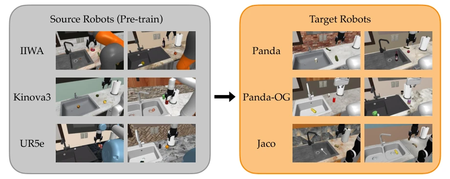
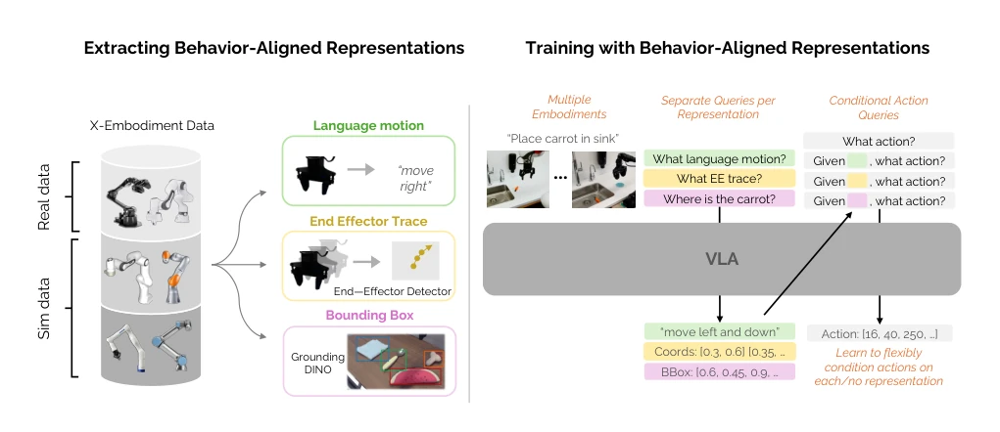
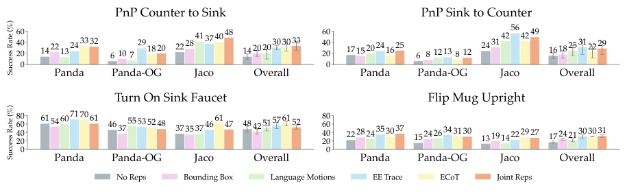
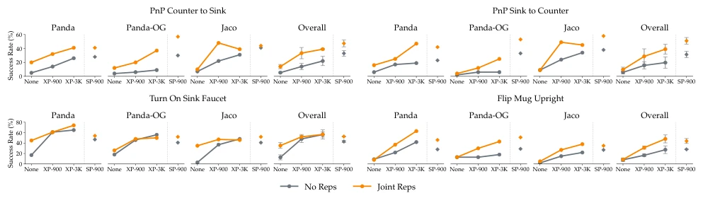
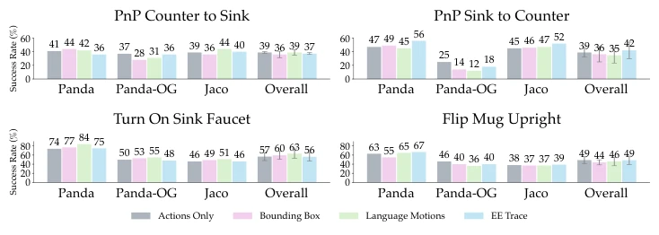
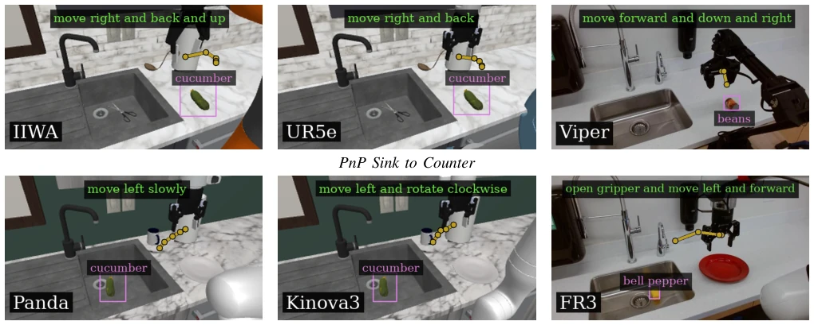

This paper attempts to address the pain point of robot cross-embodiment transfer using 'behavior-aligned representations'. Put simply, it adds a 'translator' to the VLA model, translating actions from different robots into a universal language or trajectory, then learning policies. The highlight is that real-robot experiments improved by 28%, which is indeed impressive. However, there are also many drawbacks: the 'alignment' in the simulation environment is too perfect, with camera poses and scene layouts highly consistent; can this work in the actual chaotic world? Moreover, it mainly relies on end-effector trajectories, and changing the manipulator structure might cause it to break down. It counts as adding a 'middle layer' to cross-embodiment learning, but it is still far from true general-purpose robots; do not expect it to solve all hardware differences like magic.
Large-scale imitation learning relies on multi-robot data, but the observation and action space differences between different embodiments are huge, leading to uneven cross-embodiment transfer performance [6], [8]. Existing methods mostly try to explicitly align observation or action spaces, such as adjusting camera poses or unifying action definitions [10]-[13], but this requires massive manual intervention and is hard to scale. This paper aims to explore an implicit alignment mechanism, using behavior-aligned representations (such as language motion, end-effector trajectories) as intermediaries, assuming these representations have invariance across different robots and are useful for action prediction, thereby unifying heterogeneous data. This is more scalable than directly aligning raw pixels or joint angles, and is a key step towards general-purpose robot policies.

Fig. 2. We pre-train policies on diverse cross-embodiment data mixtures from three source robots (left), and then transfer these policies to different target robots using limited data (right). We show initial observations in our data for the task PnP Counter to Sink. Our tasks capture significant variation in kitchen layouts, textures, object types, and object poses.
The overall framework is based on Vision-Language-Action (VLA) models, adopting the MiniVLA architecture. The core innovation lies in introducing behavior-aligned representations as an intermediate reasoning layer. In terms of data flow, the model receives images and language instructions, outputting action sequences while also outputting selected representations (such as end-effector trajectories, bounding boxes, language motion descriptions). During training, auxiliary loss functions supervise the model's prediction of these representations, optimizing them jointly with action prediction. In specific implementation, through predefined representation distribution sampling subsets, it supports ECoT (Chain-of-Thought) or Joint Reps (Joint Representations) modes. This design allows the model to align behaviors of different embodiments in implicit space, rather than directly aligning raw observations. For example, end-effector trajectories map the motion of different manipulators into 2D sequences on the image plane, eliminating hardware differences. During inference, one can choose to predict only actions to accelerate, or predict representations first then actions.

Fig. 1. Left: We consider cross-embodiment datasets of both simulated and real-world robots. We then extract behavior-aligned representations: language motions via heuristics and end effector pose deltas, end effector traces via segmentation models, and bounding boxes via Grounding DINO. Right: We train VLAs with different choices of representations and ways of incorporating them, and study how this impacts transfer from cross-embodiment datasets.
The simulation benchmark RoboCasa-X covers various kitchen tasks, source embodiments include IIWA, Kinova3, etc., target embodiments are Panda, Jaco, etc. Real-robot experiments were conducted on Franka and ViperX. Evaluation metrics are success rate and task completion progress. Ablation studies show that end-effector trajectories (EE Trace) contribute most to transfer, and Joint Reps (Joint Representations) perform best overall. In simulation, using larger-scale cross-embodiment data (XP-3K) makes representations more effective. In real-robot transfer, task progress improved by 28% after introducing representations, significantly better than the no-representation baseline. Additionally, action-free data pretraining can also achieve partial transfer through representations, verifying the generalization ability of representations.

Fig. 3. We compare training with no representations, each representation separately, and combined using either ECoT or Joint Reps. Each representation improves transfer over using none, with end-effector traces helping the most. Joint Reps performs the best overall, except on Panda-OG, where end-effector traces alone are better.

Fig. 4. We compare the effect of behavior-aligned representations when using different scales of prior data. Representations are generally more impactful when scaling up prior data (with the exception for the task Turn On Sink Faucet).

Fig. 5. We compare inference of Joint Reps models by either only predicting actions, or first predicting a representation and then actions. Predicting representations can help in some situations, but the impact is usually not substantial.

Fig. 6. We show examples of our real tasks (right) in comparison to their sim counterparts (left, middle). We also show actual predictions from Joint Reps models, which demonstrate similar predicted representations across different embodiments in unseen scenes.